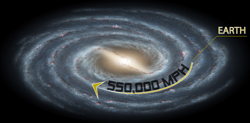

Multiple sources claim that the average individual will walk about 110,000 miles and drive almost a million in a single lifetime.
That's the equivalent of walking the circumference of the Earth's equator more than 4 times, and driving around it nearly 40.
But that's nothing compared to the space-miles one travels in a single hour.
Enter your DOB coordinates
000,000,000,000,000,000 SPACE-MILES
EXPLANATION
⇩
This number is an approximation, but it should give you an idea of the great distances each of us travel in our lifetime.
Here's how we come up with this number.
An individual standing still at the equator is moving with the spin of the Earth at 1,037 mph.
At 45 degrees latitude, that individual's speed would be 733 mph.
733 mph
1,037 mph
As our planet orbits the sun, we're moving through space at a rate of 66,667 mph.
66,667 mph
Not to scale
The Sun is actually a million times larger than the Earth
As our entire solar system orbits the super-massive black hole, Sagittarius A*, at the galactic center, every Earthling rides along on one of the Milky Way's spiral arms at approximately 550,000 mph.
Keep this in mind. All of those little glowing dots are stars. Though they make look close to one another from this distance, our Sun's nearest neighboring star is 4,000 light years away. That means if you were to travel at around 670,000,000 mph, it would take you 4,000 years to get there.
Our solar system is also bobbing up and down at quite a clip as it revolves around the galaxy. Right now, relative to the galactic disk, we're moving up at approximately 15,700 mph.
As of the year 2015, we are apparently hurtling upward relative to the galactic disk. Don't worry, according to cosmologists, at some point in the distant future, this upward momentum will eventually slow and reverse itself. We will begin to dip back into the galactic disk, and the below it. Then back up again. Up and down. Round and round.
Using some of our nearest celestial neighbors as reference points, it has been estimated that the entire Milky Way galaxy is hurtling through interstellar space at an astonishing 2,237,000 mph.
Check out this amazing video for an idea of the sheer size of the intersteller space through which we are racing
Don't take your eyes off the focal point and your mind will be blown
So, if you disregard miles walked or driven, and add up the rest, an individual on the equator is travelling through space at approximately 2,870,404 mph, or 797 miles per second.
And an individual at 45 degrees latitude is moving at approximately 2,870,100 mph, which, when rounded to the nearest whole number, still works out to 797 miles per second.
That's like circumnavigating the Earth's circumference almost twice every minute.
So, never let anyone tell you that you haven't been around, because baby, you're a flyin'.
Cheers.
Robert Manolis
** Velocities are approximations taken from Wikipedia and NASA websites **